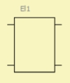

This four-pole component implements a user defined element. It relates to a Dynamic Link Library (DLL) which provides functions for the nodal admittance matrix, for setting the parameter string and for error reporting.